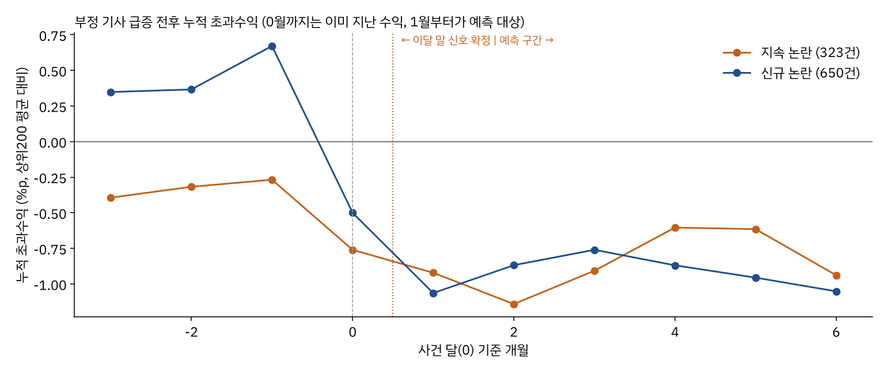

H5 논란형 가설 검증 기록
보고서용 · 11/19 · 데이터: 팀 정형 데이터셋(예원) + 뉴스 129만 건(ESG 규칙 v1.2) · 코드: 연습장/yw_run/h5_controversy_yw.py · 결과: 연습장/out_yw/h5_controversy/
1. 왜 이 가설을 세웠나
앞선 결과: 뉴스 감성 점수는 같은 달 수익률과 강하게 연결되지만(IC 0.180), 2016년 이후로는 다음 달을 예측하지 못했다. ESG 부정·긍정 기사도 다음 달 수익률과 관계가 없었다(H3', H4' 지지 안 됨). 즉 대형주 뉴스는 대부분 나온 달 안에 반영되고 끝난다.
11/18 피드백: 논란형 기사를 보려면 "기사 효과가 한 달 이상 가는 경우가 있다"는 전제가 깔려 있다. 드문 극단 사례일 수 있으니 실제로 몇 개나 있는지부터 찍어 보고, 한 명이 빠르게 확인하라.
그래서 던진 질문: 보통 뉴스는 그달에 끝나지만, 논란이 한 달 넘게 이어지는 경우라면 이달 말에도 아직 다 반영되지 않아서 다음 달 수익률까지 영향을 주지 않을까?
2. 가설과 예측 규칙
| 항목 | 내용 |
|---|
| 가설 H5 | 이달 말 시점에 지난달부터 이어지고 있는 부정 논란이 있는 종목은 다음 달 수익률이 낮다. |
| 지켜야 할 규칙 | 우리 프로젝트는 이달 말까지 알 수 있는 정보로 다음 달을 예측한다. 처음 초안("다음 달에도 이어지는 논란")은 다음 달 기사를 봐야 알 수 있어 미래 정보를 쓰는 문제가 있었다. 그래서 '이어짐'을 과거 방향(지난달 → 이번 달)으로 정의했다. |
| 급증 | 이번 달 부정 ESG 기사 5건 이상, 그리고 그 회사의 직전 12개월 평균의 3배 이상 (평소보다 크게 몰림) |
| 지속 논란 (본 신호) | 급증 + 지난달에도 부정 기사 3건 이상 → 한 달 넘게 이어지는 논란 |
| 신규 논란 (비교용) | 급증 + 지난달은 3건 미만 → 이번 달 처음 터진 논란 |
| 표본 | 해마다 직전 12월 시총 상위 200 종목 중 그해 기사가 있는 종목, 2002–2021 (과거 12개월 평균 계산을 위해 2002년부터), 4만 7,035 종목-월 |
| 예측 대상 | 다음 달 수익률(본 판정), 2·3달 뒤와 1~3개월 누적(보조). 같은 달 수익률은 이미 지난 것이라 참고로만 |
3. 판정 기준 (결과를 보기 전에 정함)
① 지속 논란 사건이 30건 이상 (교수님 지적처럼 너무 드물면 판단 불가)
② 다음 달 또는 1~3개월 누적 수익률 차이(사건 있는 종목 − 없는 종목)가 t −2 이하
→ 둘 다 만족하면 진행(규칙 검증, 모델 반영), 아니면 기록하고 종료. 보조로 다른 변수 9개를 통제한 FM 계수도 확인.
4. 결과
4-1. 사건 수
| 신호 | 사건 수 | 메모 |
|---|
| 급증 전체 | 973건 | |
| 지속 논란 | 323건 (92개 종목) | 해마다 5~36건 → 기준 ① 충족 |
| 신규 논란 | 650건 | |
4-2. 수익률 차이 (같은 달 안에서 사건 있는 종목 − 없는 종목, %p)
| 신호 | 같은 달(참고) | 다음 달 | 2달 뒤 | 3달 뒤 | 1~3개월 누적 |
|---|
| 지속 논란 | −0.60 (t −0.7) | −0.46 (t −0.7) | −0.78 (t −1.2) | +0.18 (t 0.3) | −1.05 (t −0.8) |
| 신규 논란 | −1.61 (t −3.6) | −0.51 (t −1.1) | +0.27 (t 0.6) | +0.10 (t 0.2) | −0.41 (t −0.5) |
| 급증 전체 | −1.12 (t −2.3) | −0.56 (t −1.2) | +0.14 (t 0.3) | +0.53 (t 1.1) | −0.14 (t −0.2) |
4-3. 기간별 (지속 논란)
| 2002–10 | 2011–15 | 2016–21 |
|---|
| 다음 달 | −1.37 (t −0.9) | +0.66 (t 0.7) | −0.52 (t −0.6) |
| 1~3개월 누적 | −0.77 (t −0.3) | −1.30 (t −0.9) | −1.13 (t −0.6) |
4-4. FM (다른 변수 9개 통제, 다음 달)
지속 논란 −0.25%p (t −0.5), 신규 논란 −0.52%p (t −1.3)
4-5. 사건 전후 누적 초과수익

가로축: 사건 달(0) 기준 개월. 세로축: 상위 200 평균 대비 누적 초과수익. 0월까지는 이미 지난 수익, 1월부터가 예측 대상.
5. 판정과 해석
판정: H5 지지 안 됨 → 진행하지 않음. 기준 ①(323건)은 충족했지만 기준 ②(다음 달 t −0.7, 1~3개월 누적 t −0.8)를 만족하지 못했다. FM에서도 유의하지 않았고, 어느 기간에서도 유의하지 않았다.
해석: 처음 터진 논란은 사건 달에 −1.6%p로 바로 반영된다(t −3.6). 그 뒤 1~2개월 더 조금 내려가는 모습(약 −0.4~−0.5%p, 가설 방향)은 보이지만, 종목마다 흔들림이 커서 우연과 구별되지 않는다. 한 달 넘게 이어지는 논란도 다음 달에 뚜렷한 추가 하락을 만들지는 않았다. 대형주의 부정 사건은 터진 달 안에 대부분 가격에 반영된다는 감성·ESG 결과와 같은 결론이다.
6. 한계와 추가 확인
| 한계 | 내용 | 보완 |
|---|
| '이어짐'의 정의 | 지난달 부정 기사 수로 정의해서, 같은 사건이 이어진 건지는 기사를 읽어 봐야 안다 | 진행 시 아영 검증 예정이었으나 종료 |
| 월 안의 시점 | 월 합계라 기사가 월초에 몰렸는지 월말까지 이어졌는지 모른다 | H5-B: 마지막 7일에도 부정 기사가 있는 '월말 진행 중 논란'으로 재확인 (news/영섭_월말논란.py, 영섭 PC에서 실행) |
| 규칙 숫자 | 5건·3배·3건은 사전에 정한 값 | 결과를 보고 바꾸지 않음 (과적합 방지) |
| ESG 분류 | 제목 키워드 규칙 v1.2 (사람 정답 91%) | 임베딩 비교 예정(11/18 피드백) |
7. 부록: 가설 판정 규칙 정리 (팀 공통)
| 무엇을 판정 | 규칙 | 왜 |
|---|
| 정형 변수 단계 추가 | XGBoost 평균 IC가 오르고, 2011–2021 11년 중 6년 이상 오르면 통과 | 평균은 한두 해에 휘둘리므로 해마다 꾸준한지도 봄 |
| 변수 방향(H1·H2) | FM 계수 부호가 가설 방향이고 |t| ≥ 2이면 '어느 정도', ≥ 3이면 '확실' | t 2 ≈ 우연일 확률 5% 수준 |
| 뉴스 가설(H3'·H4'·H5) | ① 있음−없음 차이 t ≤ −2(가설 방향) ② 통제 9개 FM에서 |t| ≥ 2(가설 방향) ③ XGBoost에 넣었을 때 IC 증가 → ① 또는 ②면 지지, ③은 모델에 넣을지 결정 | 단순 비교 / 다른 변수 효과 제거 / 실제 예측 개선을 각각 확인 |
| 빠른 확인(탐색) | 사건 수 30건 이상 + 주 지표 t ≤ −2 → 진행, 아니면 기록 후 종료 | 표본이 너무 적으면 판단 불가, 안 되는 걸 오래 파지 않기 |
| 분류 규칙 | 사람 정답 100건 대비 정확도 80% 이상 | 내용 분석 관례, 오분류가 많으면 효과가 묽어짐 |
| 공통 | 기준은 결과를 보기 전에 정하고, 결과를 보고 바꾸지 않는다 | 원하는 결과가 나올 때까지 고치는 것을 막기 위해 |